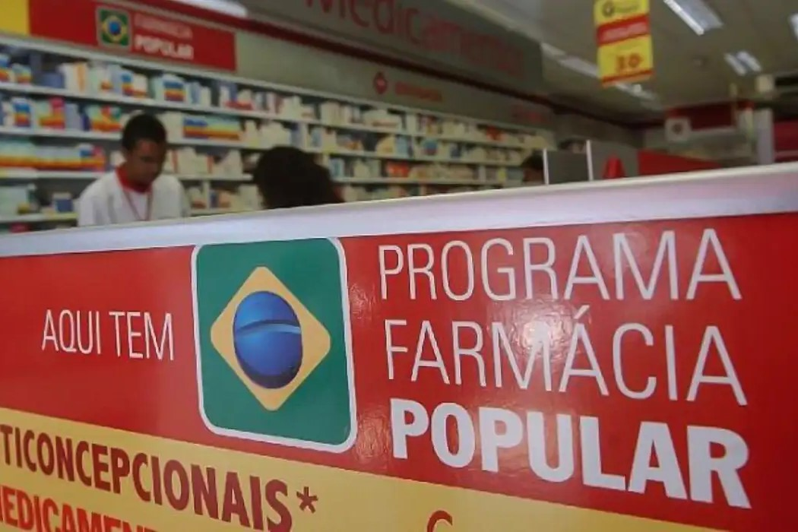

Artigo em destaque

Fiscal · Reforma 2026
Reforma tributária 2026: o que muda na NF-e e NFC-e da sua farmácia ou padaria
IBS, CBS, novos campos obrigatórios na nota fiscal, quem já é obrigado e o checklist do que fazer agora para não ter nota rejeitada pela Receita Federal.
Ler artigo completo
Mais artigos

PDV e Operação
PDV rápido x fila do caixa: o que muda no faturamento da sua farmácia
Quando o caixa trava, o cliente vai embora — e você não tem como medir. Veja como um PDV integrado transforma o faturamento no pico de movimento.
Ler artigo →

Estoque
Controle de estoque em farmácias: como evitar perdas por vencimento
38% das perdas em farmácias vêm de produtos vencidos que poderiam ser evitados. Veja o método PEPS, alertas por prazo e os 5 passos para acabar com esse problema.
Ler artigo →

Gestão Financeira
Precificação em farmácias: como calcular markup e margem sem perder lucratividade
Markup não é margem — confundir os dois pode destruir a lucratividade. Saiba como calcular corretamente, respeitar o teto CMED e montar uma estratégia por categoria.
Ler artigo →

PDV e Operação
PBM na farmácia: como funciona e como aumentar o ticket médio com convênios
Vendas via PBM têm ticket médio 43% maior que o balcão convencional. Veja como credenciar, integrar ao ERP e evitar glosas que drenam o faturamento.
Ler artigo →
Gestão
10 KPIs para gestores de farmácia: os indicadores que separam farmácias lucrativas das que sobrevivem no aperto
68% dos gestores operam sem nenhum indicador formal. Com esses 10 KPIs — ticket médio, giro de estoque, CMV%, ruptura e mais — você tem visão completa do negócio.
Ler artigo →
Conformidade e Fiscal
SNGPC: como sua farmácia evita multa em 2026 (guia rápido)
Desde 2 de janeiro, todas as regiões do Brasil estão obrigadas a transmitir XML ao SNGPC. Os 5 passos práticos para não ser autuado.
Ler artigo →
Publicados em junho 2026

Padaria · Produção
Controle de produção em padaria: como evitar desperdício e aumentar sua margem
8 a 15% do que a padaria produz vai para o lixo — segundo o Sebrae. Ficha técnica, planejamento diário e controle por turno para cortar esse número.
Ler artigo →
Farmácia · Financeiro
Fluxo de caixa na farmácia: como controlar e não ficar no vermelho
21% dos donos de farmácia independentes citam dificuldades de fluxo de caixa como principal causa da queda no resultado. Veja como mudar isso.
Ler artigo →

Padaria · Custo
Gestão financeira de padaria: como calcular o custo real de cada produto
Você vende o pão mais popular da sua padaria sabendo a margem real? Matéria-prima, mão de obra, energia e rateio — o cálculo completo que muda o jogo.
Ler artigo →
Farmácia · Processos
Como montar um processo de abertura e fechamento de caixa na farmácia
Caixa com diferença no fechamento? Passo a passo para documentar o processo, controlar suprimentos, sangrias e proteger sua equipe de acusações injustas.
Ler artigo →
Fiscal · Reforma 2026
Reforma tributária 2026: o que muda na NF-e e NFC-e da sua farmácia ou padaria
IBS, CBS, novos campos obrigatórios. Quem já é obrigado, o que precisa mudar no sistema e o checklist para não ter nota rejeitada.
Ler artigo →
Padaria · PDV
PDV para padaria: o que é e por que sua padaria precisa de um
Mais da metade das padarias ainda opera com caixa registradora. Veja o que um PDV faz, como difere da registradora e quando sua padaria precisa de um.
Ler artigo →
Padaria — guias completos
Padaria · ERP
ERP para padaria: o que é, o que faz e quando vale contratar
PDV registra a venda. ERP conecta tudo — estoque, produção, financeiro e fiscal. Entenda a diferença e saiba quando sua padaria precisa de cada um.
Ler artigo →
Pequena Padaria · Insumos
Como reduzir o desperdício de insumos em pequenas padarias
Padaria de R$ 30 mil/mês pode perder até R$ 3.600 todo mês em insumos desperdiçados. Ficha técnica e planejamento de produção resolvem sem grande investimento.
Ler artigo →
Padaria · Precificação
Como precificar pão e salgados na padaria sem perder margem
Padaria que dobrou o movimento e lucra menos do que antes. O motivo quase sempre é preço calculado no cheiro. Os 4 componentes do custo real e o exemplo do pão francês.
Ler artigo →
Padaria · Multi-unidade
Gestão de múltiplas unidades de padaria: como centralizar sem perder controle
Abriu a segunda unidade e perdeu o controle das duas? Estoque, produção, receitas padronizadas e financeiro consolidado — como redes de padaria operam com um sistema só.
Ler artigo →